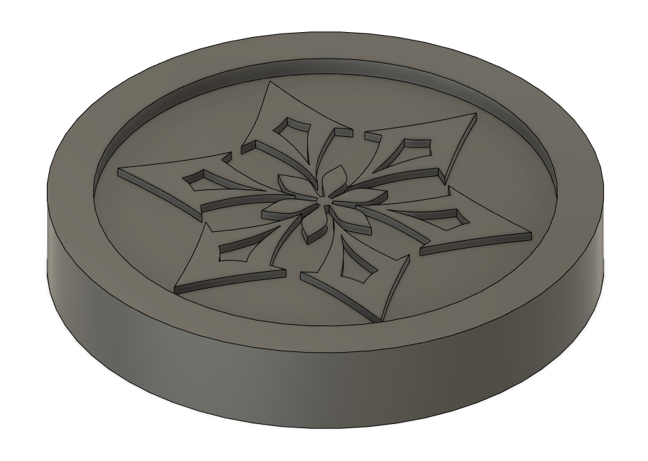
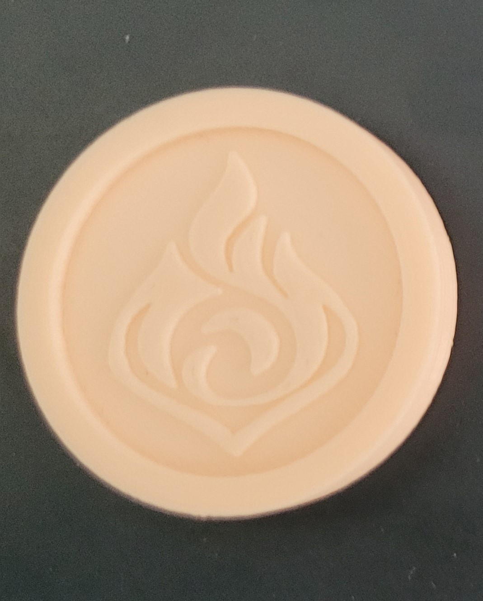

Vending Machine Project
The aim of this project was to make a simple Vending Machine capable of dispensing items

Goal:
LCD able to update texts upon each state
Sensor to detect if token is inserted
Button to select item
Motor to be able to activate and stop when button pressed
Create 3D Models for 3D Printing and laser cutting
Code
Connecting the components to the stated pins for each component.

Coding the vending machine, some libraries were needed such as LiquidCrystal_I2C, Servo and Wire
.PNG)
The Switch and IRSensor needed to have a pin number attached to it.
The LCD needs to be initalised and the backlight enabled in order to see the text on the LCD properly. As well as setting a cursor in order to set where the text starts writing.
.PNG)
Writing Servo to 90 will make the motor stay in its stationary position. This is to prevent the motor from turning when there is power supplied into the board
.PNG)
When the Sensor detects that a token has been inserted, the LCD will update and the machine will wait for input from Switch1 or Switch2
The delay between each line is to stop the code from running too fast in order to give time for the physical components to work.
.PNG)
3D Modeling
Vending Machine Box
The vending machine has 2 compartments, a slot for the motor, LCD, button and a mini container to hold the tokens in after inserting token
During the laser cutting process, the pieces cut were sometimes too small or the laser cutter did not cut all the way through. This was fixed through filing the wood.
The laser cut was the assembled with the components.

Coin/Token
The coin/token was a simple circular shaped
When printing the coin, the base was not printed properly even with supports in place. Resulting in only the top of the coin to look proper. The fix for this was to make the bottom flat while the top had the design.
